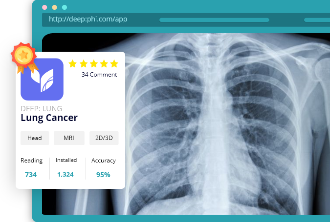

01
One-click Access
to AI Apps around the World
From individual solutions to integrated product lines for global organizations, customers in more than 120 countries use SAP applications to build and apply the enterprise-wide system from manufacturing/services....


02
Virtuous Cycle with vivid Feedback
From Doctors
In the medical field, doctors use AI Apps and leave feedback. This makes AI Apps more sophisticated. In addition, during the reading process, an additional data set may be generated by labeling for further learning.
03
Anyone can launch AI App easily
By DEEP:PHI
DEEP: PHI makes it easy for anyone to create medical AI Apps. With the support of the platform, you can train AI models without coding. You can then deploy it as an app in DEEP: STORE
